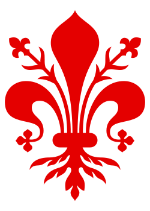
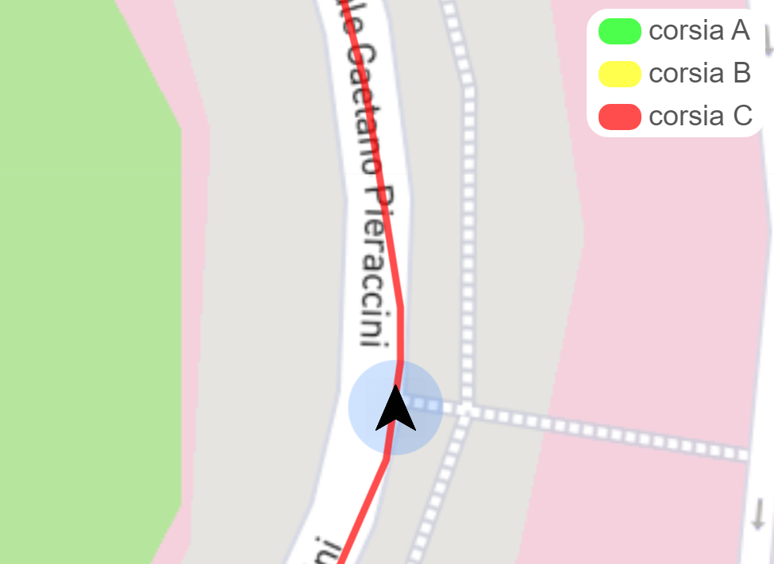

  <ion-content fullscreen class="ion-padding" scroll-y="false">
    <ion-slides pager="true">

      <ion-slide class="slide-1">
        <div class="slide">
          
          <h2>Benvenuto</h2>
          <p>Questa app è stata sviluppata per segnalare le corsie riservate nella città di Firenze</p>
        </div>
      </ion-slide>

      <ion-slide class="slide-2">
        
        <h2>Come appare</h2>
        <p>Nella mappa sarranno identificate, con diversi colori, le tipologie di corsie riservate in modo da renderle visibili durante i tuoi spostamenti</p>
      </ion-slide>

      <ion-slide class="slide-3">
        
        <h2>Segnalazione</h2>
        <p>Se passi in una corsia in cui non sei autorizzato a transitare verrai avvisato tramite un alert e inoltre verranno inviati i dettagli della strada appena percorsa nella sezione notifiche.
            In impostazioni puoi selezionare le autorizzazioni in tuo possesso in base al veicolo che guidi </p>
      </ion-slide>

      <ion-slide class="slide-4">
        
        <h2>Pronto per iniziare?</h2>
        <br>
        <ion-button fill="clear" (click)="readyToPlay()">Continua <ion-icon slot="end" name="arrow-forward"></ion-icon></ion-button>
      </ion-slide>

    </ion-slides>
  </ion-content>

